Alibaba Loses AI Money, and It Will Lose the War. Our Target: $69
Two wars, one wallet. The market is paying a recovery multiple for a company whose core is shrinking, whose AI business loses money, and whose balance sheet just blinked.
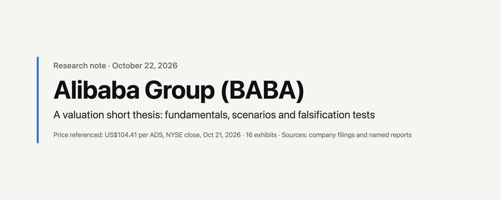
Also on X: x.com/stevenkwok20290/status/2113107041422311878
Contents · 20 sections
- Our view in one page: target $69, and a 65% chance it's lower in a year
- 1. The bull pitch is a year out of date
- 2. Exhibit A: cloud growth accelerating, profit down five quarters straight
- 3. The money machine is shrinking: marketplace revenue down 7%
- 4. The delivery war: RMB 86 billion of e-commerce profit gone in one year
- 5. Alibaba's AI lost RMB 8.2 billion last quarter
- 6. The bill for the data centers hasn't arrived yet
- 7. Outgunned: ByteDance and Tencent each earn about six times as much
- 8. From $11.9 billion of buybacks to $10 billion of new shares
- 9. Four misses in a row, and the Street still wants +66%
- 10. Not cheap: 33.9 times what Alibaba actually earns
- 11. We have seen this movie: Baidu went "All in AI" and is down 52%
- 12. Fines, a Cayman holding company and a board you don't control
- 13. Eight questions management should answer
- 14. What happens next: results around November 24
- 15. The bull case, and why we don't buy it
- 16. Eight things that would prove us wrong
- 17. Alibaba is not going to zero. It doesn't need to.
- Disclaimer
- Sources
October 22, 2026. Price referenced: US$104.41 per ADS (NYSE close, October 21, 2026). Written in the style of activist short research. Not affiliated with Citron Research or any other firm. Facts are sourced to company filings and named reports; opinions are labeled as opinions. See the disclosure section before relying on anything here.
Our view in one page: target $69, and a 65% chance it's lower in a year#
We believe Alibaba is the most expensive "cheap" stock in Chinese internet.
On the numbers investors are told to watch, Alibaba looks like a turnaround. Revenue growth is back to 9%. Cloud revenue is growing 45%. AI-related product revenue has grown at triple digits for twelve straight quarters. The forward price-to-earnings ratio on consensus is 15.7 times, and the stock is down 37% in a year. That is the pitch.
On the numbers that pay for the pitch, Alibaba is going the other way.
- The core marketplace is shrinking. Customer management revenue, the take-rate engine that funded everything Alibaba ever built, fell 7% year over year in the June 2026 quarter, to RMB 82.5 billion. Management's preferred "like-for-like" figure, which strips out a merchant incentive program booked as contra revenue, grew 1%.
- Profit has collapsed for a full year. Adjusted EBITA over the last four reported quarters was RMB 64.9 billion, down 61% from RMB 166.9 billion in the prior four. Non-GAAP net income fell 68%. Non-GAAP earnings per ADS fell from RMB 63.72 to RMB 20.59.
- AI is a net loss-maker at Alibaba, not a profit engine. In the June quarter, the AI Cloud and Compute segment earned RMB 5.6 billion of adjusted EBITA. The new AI Labs and Applications segment lost RMB 13.9 billion. Together, the two segments Alibaba itself labels as AI lost RMB 8.2 billion in a single quarter before counting the capital spent to build them.
- The cash engine has stalled. Free cash flow over the last four quarters was negative RMB 72.5 billion. A year earlier it was positive RMB 37.7 billion. Operating cash flow nearly halved. June-quarter capex was RMB 67.7 billion, up 75%. Annualized, that pace is 3.4 times trailing operating cash flow.
- The capital return story has reversed. In fiscal 2025 Alibaba bought back US$11.9 billion of stock and cut its share count by 5.1%. In fiscal 2026 it bought back about US$1.0 billion. In August 2026 it sold 710 million new shares in an HK$80 billion placing at HK$112.70, about US$116 per ADS. The stock now trades below the price at which the company just sold it.
- The estimate keeps not showing up. Alibaba has missed consensus non-GAAP EPS four quarters in a row, by 25%, 35%, 89% and 21%. Consensus for the September quarter still assumes EPS of RMB 10.96 per ADS, 29% above the June quarter. Consensus for fiscal 2027 assumes 66% growth.
- It is outgunned. ByteDance reportedly earned about US$42 billion in 2025 and was weighing as much as US$70 billion of 2026 AI capex. Tencent's trailing non-IFRS net profit is roughly US$42 billion. Alibaba's is about US$7 billion. ByteDance's Doubao has 2.3 times Qwen's monthly users. DeepSeek gives its frontier model away under an MIT license.
Reasons, target, probability, expected value. We value Alibaba on fiscal 2028 (year to March 2028) non-GAAP EPS under four scenarios, using multiples anchored to Alibaba's own five-year range. Our probabilities are subjective and stated so they can be argued with.
| Scenario | FY28 non-GAAP EPS per ADS | Multiple | Value per ADS | vs. US$104.41 | Probability |
|---|---|---|---|---|---|
| Bear: two wars, no ceasefire | RMB 30 | 9x | US$40 | -61% | 25% |
| Base: slow, expensive repair | RMB 42 | 11x | US$69 | -34% | 40% |
| Street: consensus delivered | RMB 62 | 12x | US$111 | +7% | 25% |
| Bull: AI winner re-rating | RMB 72 | 16x | US$172 | +65% | 10% |
| Probability-weighted | US$83 | -21% |
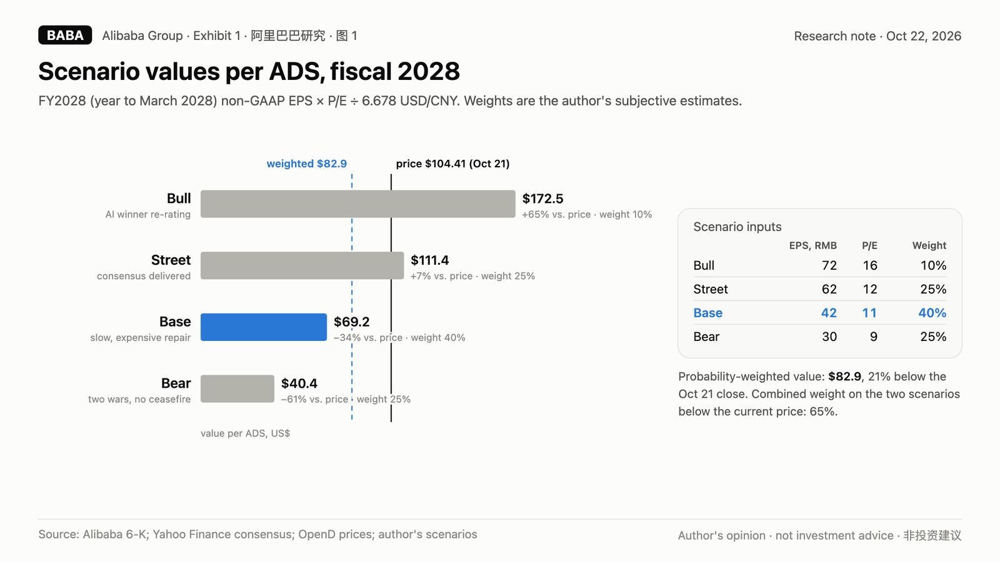
Our 12-month base-case target is US$69. Our probability-weighted value is US$83, 21% below the current price. We assign a 65% probability that the shares are lower in twelve months. The 10% bull case is a 65% loss for anyone short, which is why this is a sizing problem as much as a thesis.
1. The bull pitch is a year out of date#
Every Alibaba bull case in 2026 has the same shape. It goes like this.
The e-commerce business is a cash cow that has stabilized. The quick commerce war with Meituan and JD.com is a temporary investment that is already improving. Alibaba Cloud is the number one cloud provider in China, it is growing at 45%, and its margins are expanding. Qwen is a world-class model family. The stock is down from US$178 in October 2025, it trades at a mid-teens forward multiple, and China tech has been hated long enough. Buy the AI winner at a value price.
We think each sentence of that pitch is either incomplete or already out of date.
The cash cow is shrinking in the line item that matters most. The quick commerce "investment" has consumed most of a year of China e-commerce profits. Alibaba Cloud is growing, but the group's AI businesses lose more than the cloud earns. Qwen is excellent and is competing against a free, MIT-licensed DeepSeek and against ByteDance's distribution machine. And the mid-teens forward multiple only exists if consensus estimates that have been wrong four times in a row are right the fifth time.
The rest of this report walks through the filings. We use Alibaba's own numbers wherever possible: the quarterly results furnished to the SEC on Form 6-K, the August 2026 placing announcements, and the company's annual results. Where we rely on reporting about private competitors, we say so.
2. Exhibit A: cloud growth accelerating, profit down five quarters straight#
The table below is taken from Alibaba's quarterly results announcements. Figures are in RMB billions except EPS, which is RMB per ADS on a non-GAAP diluted basis. "Consensus" is the pre-report consensus compiled by Yahoo Finance.
Exhibit 2. Quarterly results, June 2025 to June 2026
| Quarter ended | Revenue | YoY | Cloud revenue | Cloud YoY | Adjusted EBITA | EBITA YoY | EBITA margin | Non-GAAP EPS | Consensus | Free cash flow |
|---|---|---|---|---|---|---|---|---|---|---|
| Jun 2025 | 247.7 | +2% | 33.4 | +26% | 38.8 | -14% | 16% | 14.75 | 15.47 | -18.8 |
| Sep 2025 | 247.8 | +5% | 39.8 | +34% | 9.1 | -78% | 4% | 4.36 | 5.78 | -21.8 |
| Dec 2025 | 284.8 | +2% | 43.3 | +36% | 23.4 | -57% | 8% | 7.09 | 10.94 | +11.3 |
| Mar 2026 | 243.4 | +3% | 41.6 | +38% | 5.1 | -84% | 2% | 0.62 | 5.74 | -17.3 |
| Jun 2026 | 269.0 | +9% | 48.4 | +45% | 27.3 | -30% | 10% | 8.52 | 10.76 | -44.7 |
Sources: Alibaba Group 6-K results announcements for the quarters ended June 30, 2025 (0001104659-25-085638), September 30, 2025 (0001104659-25-115949), December 31, 2025 (0001104659-26-032060), March 31, 2026 (0001104659-26-060224) and June 30, 2026 (0001104659-26-099220). June 2026 cloud revenue is the new "AI Cloud and Compute Services" segment, which combines Cloud Intelligence and T-Head; growth is on the restated base.
Read the table left to right and you see the bull case. Revenue growth improved from 2% to 9%. Cloud growth accelerated every single quarter, from 26% to 45%.
Read it right to left and you see the problem. Adjusted EBITA fell in every one of the five quarters, by as much as 84%. EBITA margin went from 16% to as low as 2% and is now 10%. Non-GAAP EPS missed the consensus every quarter after June 2025. Free cash flow was negative in four of the five quarters, and the most recent quarter was the worst of the five.
Put the trailing twelve months next to the twelve months before them:
| Last four quarters vs. prior four | Prior four quarters | Last four quarters | Change |
|---|---|---|---|
| Revenue (RMB bn) | n/a | 1,045.0 | |
| Adjusted EBITA (RMB bn) | 166.9 | 64.9 | -61% |
| Non-GAAP net income (RMB bn) | 150.9 | 47.9 | -68% |
| Non-GAAP EPS per ADS (RMB) | 63.72 | 20.59 | -68% |
| Operating cash flow (RMB bn) | 150.5 | 78.5 | -48% |
| Free cash flow (RMB bn) | +37.7 | -72.5 | swing of -110 |
Prior four quarters: September 2024 to June 2025. Last four: September 2025 to June 2026. Computed from the quarterly figures reported in the same 6-K announcements.
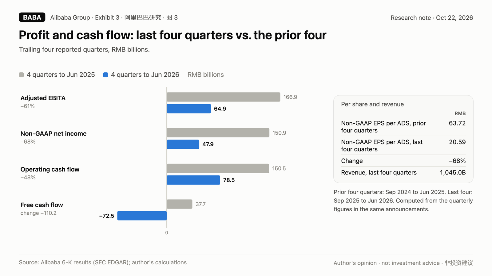
This is not a company in a soft patch. This is a company that has given up roughly two-thirds of its earnings power and more than RMB 110 billion of annual free cash flow in one year, while telling investors that the businesses responsible are investments.
Investments are supposed to pay back. The rest of this report asks when, and with what.
3. The money machine is shrinking: marketplace revenue down 7%#
Alibaba's economic engine was never really "e-commerce." It was customer management revenue: the advertising and commissions merchants pay to be seen by Taobao and Tmall shoppers. CMR is high-margin, recurring, and it scaled with China's consumer economy for two decades. It funded the cloud, the logistics network, the international bets, the acquisitions and the buybacks.
In the June 2026 quarter, CMR fell 7% year over year, from RMB 89.2 billion to RMB 82.5 billion.
Alibaba's explanation is that a new merchant program is booked as "contra revenue," meaning the incentives Alibaba pays merchants are netted against the revenue it collects from them. Strip that out, the company says, and CMR "on a like-for-like basis would have grown by 1% year-over-year." The same paragraph of the results announcement adds that "the slow-down in revenue growth was primarily due to weaker transaction activities."
We want to be precise about what that means, because it is the most important sentence in the filing.
First, the reported number is the real number. Contra revenue is money Alibaba does not get to keep. A merchant subsidy that reduces revenue is a subsidy, whatever the program is called.
Second, the like-for-like number is the generous number, and even the generous number is 1%. One year earlier, CMR was growing 10%. In the December 2025 quarter it grew 1%, and management attributed that to "weaker transaction activities and phase-out of the impact of software service fee." In the March 2026 quarter, like-for-like growth was 8%. In June it was back to 1%.
| Quarter | CMR growth as presented |
|---|---|
| Jun 2025 | +10% |
| Sep 2025 | +10% |
| Dec 2025 | +1% |
| Mar 2026 | +8% like-for-like |
| Jun 2026 | -7% reported, +1% like-for-like |
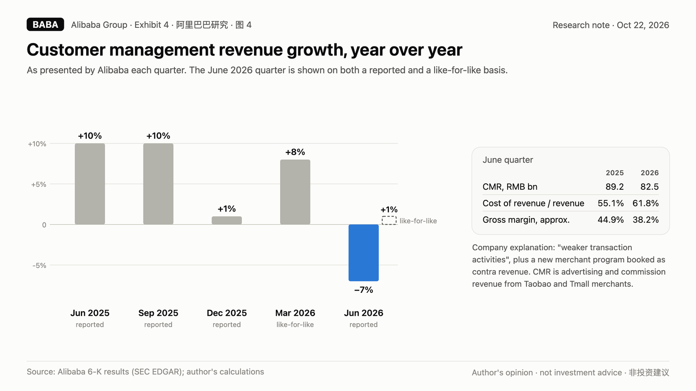
Third, the cost line tells you who is paying for this. In the June 2026 quarter, cost of revenue rose to 61.8% of revenue from 55.1% a year earlier. Alibaba attributes the increase to a higher mix of cloud and technology revenue "as well as the contra revenue impact from the new business development program." Group gross margin, in other words, fell from about 44.9% to about 38.2% in a year.
The like-for-like framing asks investors to look through a program that both shrinks reported revenue and raises the cost ratio. We think investors should do the opposite. When a dominant marketplace has to pay merchants to stay and still shows 1% growth on its own preferred measure, the market is telling you something about competitive position. PDD, Douyin e-commerce and JD.com did not stop competing because Alibaba changed how it books its incentives.
There is a second-order problem. CMR is the profit pool that is supposed to fund the AI war. If the profit pool is flat in a good quarter and shrinking in a reported one, the AI war has to be funded from somewhere else. In August 2026, Alibaba showed us where.
4. The delivery war: RMB 86 billion of e-commerce profit gone in one year#
In 2025, Alibaba entered an all-out subsidy war in instant retail and food delivery against Meituan and JD.com, primarily through Taobao Instant Commerce. The cost of that decision is visible in a single line: adjusted EBITA of the Alibaba China E-commerce Group.
| Quarter | China E-commerce Group adjusted EBITA | YoY | Company's stated reason |
|---|---|---|---|
| Jun 2025 | RMB 38.4 bn | -21% | investment in Taobao Instant Commerce, user experience, user acquisition and technology |
| Sep 2025 | RMB 10.5 bn | -76% | investment in quick commerce, user experiences and technology |
| Dec 2025 | RMB 34.6 bn | -43% | investment in quick commerce, user experiences and technology |
| Mar 2026 | RMB 24.0 bn | -40% | investment in quick commerce, user experiences and technology |
| FY2026 total | RMB 107.5 bn | -44% | vs. RMB 193.2 bn in FY2025 |
Source: Alibaba 6-K results announcements, segment adjusted EBITA discussions.
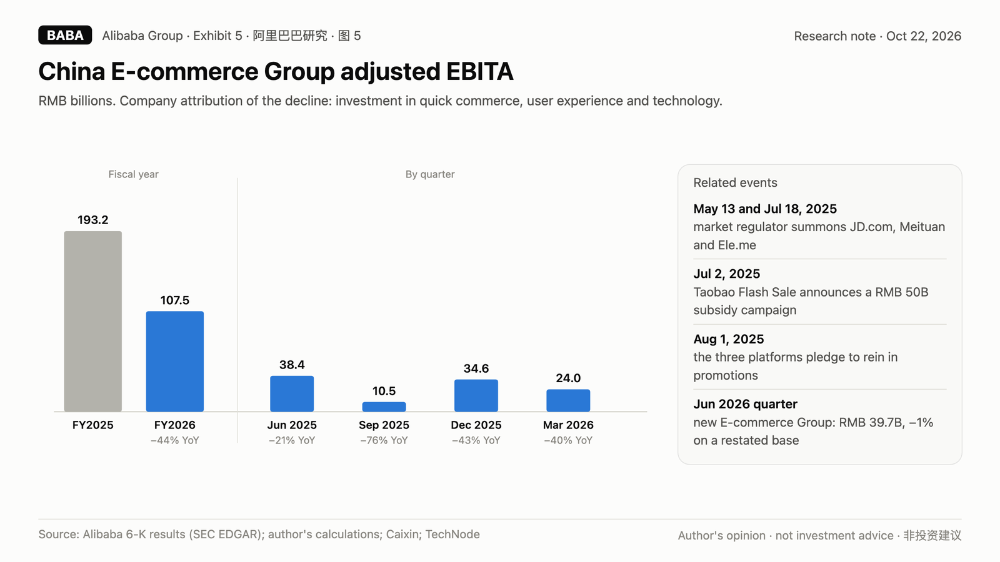
Alibaba's China e-commerce business earned RMB 193.2 billion of adjusted EBITA in fiscal 2025. In fiscal 2026 it earned RMB 107.5 billion. That is RMB 85.7 billion of profit, in one year, spent to defend and extend a position in a category where Meituan already had the scale and the riders.
Bulls point out that the war is easing. In the June 2026 quarter, under a brand-new segment structure, the combined Alibaba E-commerce Group earned RMB 39.7 billion of adjusted EBITA, down only 1% from the restated prior-year figure. China Quick Commerce revenue grew 45% to RMB 53.3 billion, and the company says Taobao Instant Commerce "continued to improve its unit economics quarter-over-quarter."
We take the improvement at face value and still see three problems.
The comparison base is already damaged. Flat year over year against a June 2025 quarter that was itself down 21% is not a recovery. It is a new, lower plateau.
The segment just changed shape. The June 2026 "Alibaba E-commerce Group" combines China e-commerce, international digital commerce and Freshippo. International commerce swung from losses of RMB 15.1 billion in fiscal 2025 to losses of RMB 2.1 billion in fiscal 2026 as AliExpress cut costs. Folding an improving loss-maker into the same line as a deteriorating profit center makes the combined trend look better than the China core underneath it.
Subsidy wars in China end in consolidation or regulation, not in a clean win. Ride-hailing ended in mergers. The 2015 to 2018 food delivery war ended with Alibaba buying Ele.me and Meituan still dominant. Community group buying ended with regulators stepping in. This war has already followed the script: on July 2, 2025, Taobao Flash Sale launched a RMB 50 billion subsidy campaign; China's State Administration for Market Regulation summoned JD.com, Meituan and Alibaba's Ele.me on May 13 and again on July 18, 2025; and on August 1 the three platforms jointly pledged to rein in promotional practices. None of those endings returned the money that was spent. They only slowed the spending.
We do not argue that quick commerce will bankrupt Alibaba. We argue that it has already converted a large, predictable profit pool into a smaller and more contested one, and that the market's forward estimates assume most of that profit comes back. We think a meaningful share of it is gone.
5. Alibaba's AI lost RMB 8.2 billion last quarter#
This is the heart of the bull case and the heart of our disagreement.
Alibaba Cloud is a genuinely good business. In the June 2026 quarter, the AI Cloud and Compute Services segment grew revenue 45% to RMB 48.4 billion and grew adjusted EBITA 133% to RMB 5.6 billion, an EBITA margin of about 12%. AI-related product revenue reached RMB 12.4 billion and grew at triple digits for the twelfth consecutive quarter. External customer revenue growth accelerated to 45%. Alibaba's own Zhenwu M890 AI processor, the company says, is in use by more than 650 external customers.
We do not dispute any of that. We dispute what it is worth to an Alibaba shareholder, for four reasons.
5.1 The AI apps lose more than the entire cloud segment earns#
In the same June 2026 quarter, Alibaba created a new reporting segment called AI Labs and Applications, consolidating its model labs, the Qwen consumer business and QwenWork. That segment produced RMB 3.3 billion of revenue and an adjusted EBITA loss of RMB 13.9 billion, more than four times the RMB 3.2 billion loss in the same quarter of 2025.
| June 2026 quarter | Revenue | Adjusted EBITA |
|---|---|---|
| AI Cloud and Compute Services | RMB 48.4 bn | +RMB 5.6 bn |
| AI Labs and Applications | RMB 3.3 bn | -RMB 13.9 bn |
| Alibaba's two AI segments combined | RMB 51.8 bn | -RMB 8.2 bn |
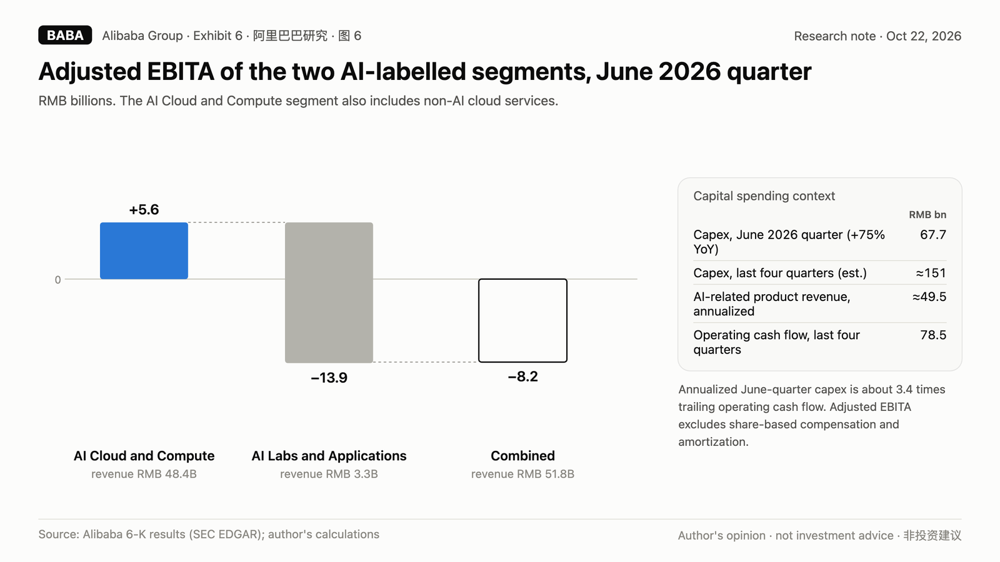
Read that last line again. At the level of adjusted EBITA, which already excludes share-based compensation and amortization, Alibaba's two AI segments lost RMB 8.2 billion in one quarter. The cloud segment includes traditional, non-AI cloud services too, so this is, if anything, a generous view of AI's contribution. Annualize it and you get roughly RMB 33 billion a year. That is before the capital spending that builds the data centers those businesses run on.
The market prices Alibaba Cloud as the AI winner. Alibaba's own segment disclosure says the group's AI activities, taken together, are a cost center.
5.2 Every yuan of AI revenue costs about three yuan of capex#
Alibaba spent RMB 67.7 billion on capital expenditures in the June 2026 quarter, up 75% from RMB 38.7 billion a year earlier. Over the last four quarters, we estimate capex at roughly RMB 151 billion. Three of those four quarters are estimated as operating cash flow minus free cash flow; the June quarter is the company's disclosed figure.
Annualize the June quarter's AI-related product revenue and you get about RMB 49.5 billion. Trailing capex is therefore roughly three times annualized AI-related product revenue.
That ratio is not unusual for a hyperscaler in a buildout. What is unusual is the funding source. Microsoft, Alphabet, Amazon and Meta fund their buildouts from enormous, growing operating cash flows. Alibaba's trailing operating cash flow is RMB 78.5 billion and falling. If Alibaba sustains the June-quarter capex pace for a year, it would spend about RMB 271 billion, equal to 26% of trailing revenue and 3.4 times trailing operating cash flow.
5.3 DeepSeek gives its model away. Try charging for yours.#
Cloud businesses earn their returns over years by charging for compute and services. In China, the price of model inference has been driven toward zero three times over.
In 2024, Alibaba Cloud itself cut prices on Qwen models dramatically as ByteDance's Volcano Engine priced Doubao aggressively. In 2025, DeepSeek's releases reset expectations of what frontier performance should cost. In 2026, DeepSeek released V4-Pro and V4-Flash with open weights under the MIT license and a one-million-token context window. Any company in China, including Alibaba's own cloud customers, can now download a frontier-class model and run it wherever the compute is cheapest.
The result is a market where volume and revenue have decoupled. According to IDC figures reported in May 2026, Volcano Engine held 49.5% of China's public cloud large-model token volume in 2025, against roughly 28% for Alibaba Cloud. Alibaba counters with Omdia data showing it held 35.8% of full-stack AI cloud revenue against 14.8% for Volcano Engine. Both can be true. That is exactly the point: the largest volume player is pricing for share, and the open-source leader is pricing at zero. Alibaba's AI revenue lead exists inside a market whose pricing is being set by its two most aggressive rivals.
5.4 Chips are a constraint Alibaba cannot buy its way out of#
In November 2023, Alibaba cancelled the planned spin-off of its cloud business, citing uncertainty from US export controls on advanced chips. The shares fell as much as 10% that day. Three years later the constraint has not gone away; it has changed shape.
IDC's first-half 2026 data, as reported by Benzinga, put Nvidia's share of China AI accelerator unit shipments at 34% with shipments down 44%, Huawei's Ascend at 28%, Alibaba's own T-Head at 7% and Cambricon at 5%. Domestic chips are improving fast. But a buildout on less efficient silicon needs more chips, more power and more data center space per unit of compute. That shows up as higher capex per yuan of AI revenue, which is the ratio in section 5.2 that already worries us.
6. The bill for the data centers hasn't arrived yet#
Capital expenditure does not disappear. It comes back as depreciation, quarter after quarter, for the useful life of the servers, networking gear and buildings it paid for. Across the industry, AI servers are typically written off over roughly five to six years.
Alibaba's last four quarters of capex, roughly RMB 151 billion by our estimate, have not yet been fully absorbed by its income statement. Spread over five years, that one year of spending alone implies on the order of RMB 30 billion of annual depreciation once it is all in service. For scale, the AI Cloud and Compute segment's June-quarter EBITA of RMB 5.6 billion annualizes to about RMB 22.5 billion.
Some of that depreciation is already in the numbers. You can see it in the June 2026 cost structure:
| June quarter | 2025 | 2026 | Change |
|---|---|---|---|
| Cost of revenue, % of revenue | 55.1% | 61.8% | +6.7 pts |
| Product development expense | RMB 15.0 bn | RMB 22.5 bn | +50% |
| General and administrative expense | RMB 7.4 bn | RMB 12.7 bn | +72% |
| Sales and marketing, % of revenue | 21.5% | 17.7% | -3.8 pts |
Source: Alibaba June quarter 2026 results, "Other Financial Results."
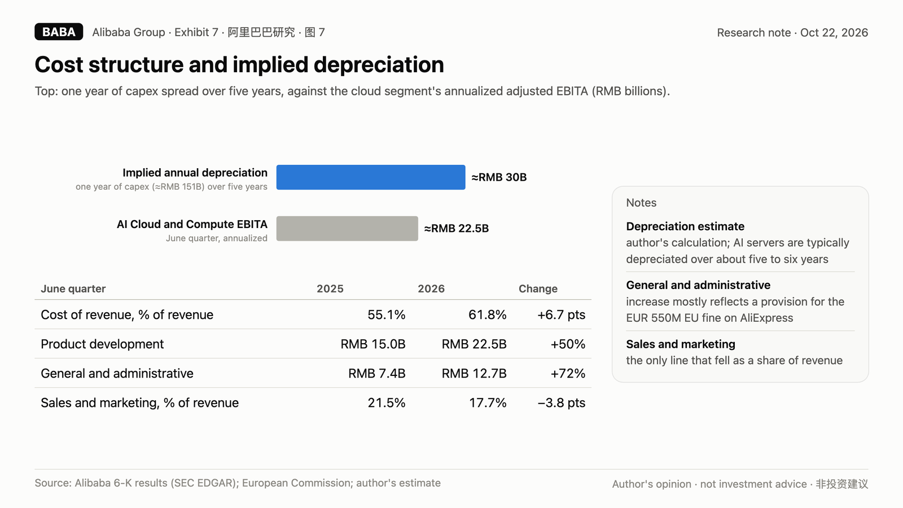
The only expense line that improved was sales and marketing, which is where quick commerce subsidies that are not booked as contra revenue live. Everything tied to technology and infrastructure went up, fast. The G&A jump was driven mostly by a provision for the EUR 550 million fine the European Commission imposed on AliExpress under the Digital Services Act; we return to that in section 12.
The point is simple. Alibaba's AI revenue growth is real, but it is running on a treadmill whose speed is set by its own capex. If the company keeps spending at the June-quarter pace, a growing share of every yuan of AI revenue will be pre-committed to depreciation for years. Bulls who model expanding cloud margins need to explain how margins expand while the asset base under them grows this fast.
7. Outgunned: ByteDance and Tencent each earn about six times as much#
A war of attrition is won by the side with the deepest and most durable profit pool. Here is what the three largest Chinese internet platforms bring to this one.
| Last-year profit engine | AI spending | Funding moves | |
|---|---|---|---|
| ByteDance (private; reported) | 2025 net profit about US$42 bn, up 27%; 1H 2026 revenue about US$120 bn, up about 30%; 1H 2026 net profit about US$20 bn | weighing up to US$70 bn of 2026 AI capex (Bloomberg, May 2026; not a final budget) | syndicated loan with 28 institutions, reported at about US$29.6 bn |
| Tencent | trailing non-IFRS net profit about RMB 280 bn, roughly US$42 bn; 2Q 2026 non-IFRS operating profit +9%, +19% excluding new AI products | 2Q 2026 capex RMB 52.8 bn, up 176% | still buying back stock: HK$16.9 bn in 2Q 2026; net cash RMB 58.2 bn |
| Alibaba | trailing non-GAAP net income RMB 47.9 bn, roughly US$7 bn, down 68% | June 2026 quarter capex RMB 67.7 bn, up 75% | HK$80 bn equity placing, August 2026 |
Sources: ByteDance figures as reported by The Information (September 15, 2026) and Bloomberg, via media coverage; not audited, not confirmed by the company. Tencent 2Q 2026 results announcement, August 12, 2026. Alibaba 6-K filings.
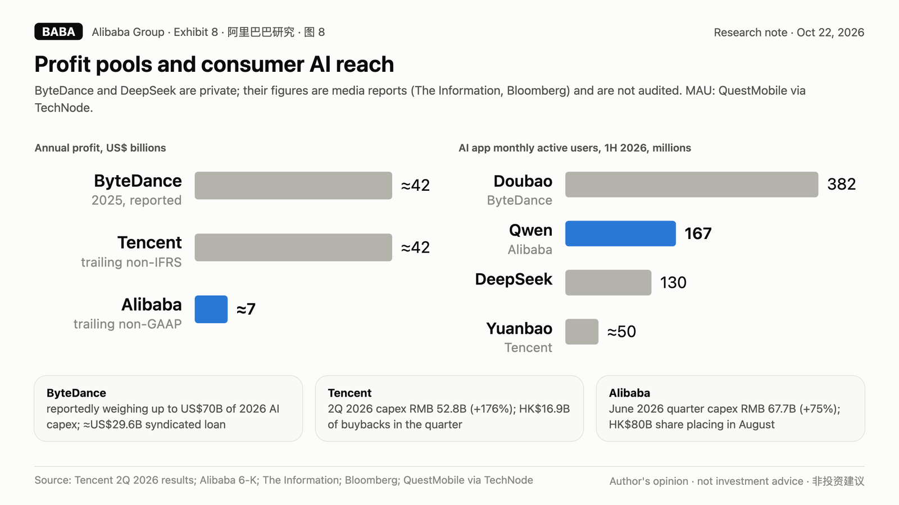
ByteDance and Tencent each bring a profit engine of roughly US$40 billion a year into this fight. Alibaba brings about US$7 billion. ByteDance's revenue is growing about 30%. Tencent's core profit, excluding its new AI products, is growing 19%. Alibaba's core marketplace revenue is shrinking.
7.1 Doubao has 2.3 times Qwen's users#
AI assistants are becoming the entry point to search, shopping and content. Whoever owns the entry point owns the traffic, and in China that is ByteDance.
According to QuestMobile's first-half 2026 data, as reported by TechNode, ByteDance's Doubao had 382 million monthly active users. Alibaba's Qwen had 167 million. DeepSeek had 130 million. Tencent's Yuanbao was reported at about 50 million. Doubao has 2.3 times Qwen's users, and it is distributed through Douyin, the most powerful attention machine in the country.
ByteDance also runs Volcano Engine, which IDC reportedly ranked first in China by public cloud large-model token volume in 2025, with a 49.5% share. Alibaba leads on revenue. ByteDance leads on usage, and it is buying more of the future with a capex budget that, if the reporting is right, could be roughly three times Alibaba's.
Alibaba's answer to that is the AI Labs and Applications segment: RMB 3.3 billion of revenue and a RMB 13.9 billion quarterly loss. That is what it costs to be the number two consumer AI app in a market where number one has Douyin behind it.
7.2 Tencent gets paid while it waits#
Tencent's position is the mirror image of Alibaba's. Its marketing services revenue grew 22% in the June 2026 quarter, which Tencent attributes partly to its AI-driven ad recommendation model. Its new AI products, the Hunyuan models, Yuanbao, CodeBuddy and WorkBuddy, cost it roughly RMB 10.5 billion of operating profit in the quarter, by the difference between reported non-IFRS operating profit and the figure excluding those products. And its profit still grew.
Tencent is also one of DeepSeek's largest backers. According to Bloomberg reporting on a regulatory filing, DeepSeek's first outside round raised about RMB 50 billion at a post-money valuation above RMB 350 billion, with Tencent contributing about RMB 10 billion. Tencent and CATL are now reported to be leading a second round of at least RMB 80 billion at a target valuation around RMB 500 billion, ahead of a planned listing in early 2027.
So Tencent has its own models, the WeChat distribution layer, a growing ad business funding the bill, and a large stake in the most important open-source model company in China. Alibaba has a strong cloud and a weak consumer AI position, and it is paying for both with a shrinking marketplace.
7.3 DeepSeek is a winner that destroys the prize#
DeepSeek is the cleanest example of why "AI leader" and "AI profit" are different things. According to The Information, as reported by The Standard, DeepSeek generated about RMB 475 million of revenue in the first seven months of 2026, roughly ten times its 2025 total, and lost about RMB 715 million. Its API gross margin was reported at 82.9%. Its V4 models are open-weight under the MIT license.
That is a company with enormous technical credibility, a small business and a pricing strategy that turns frontier capability into a commodity. Every time DeepSeek ships, the price of "good enough" AI in China resets lower. That is excellent for Chinese AI users. It is a structural headwind for anyone, Alibaba included, trying to earn a return on AI infrastructure by selling model access.
7.4 Alibaba needs 192% of its cash flow to spend a fifth of Microsoft's capex#
Bulls often point out that Alibaba spends less on AI, relative to its size, than the US hyperscalers do. That is true, and it is the problem rather than the defense.
| Last four reported quarters | Capex | Capex as % of revenue | Capex as % of operating cash flow | Recent free cash flow |
|---|---|---|---|---|
| Amazon (to March 2026) | US$151 bn | 20% | 102% | trailing four quarters negative, about -US$2.5 bn |
| Alphabet (to June 2026) | US$132 bn | 30% | 71% | June 2026 quarter capex exceeded operating cash flow |
| Microsoft (to June 2026) | US$116 bn | 35% | 63% | positive |
| Meta (to June 2026) | US$89 bn | 39% | 69% | September 2026 quarter free cash flow -US$2.1 bn |
| Alibaba (to June 2026) | about RMB 151 bn, roughly US$23 bn | about 14% | about 192% | trailing four quarters -RMB 72.5 bn |
Sources: company filings via Yahoo Finance quarterly cash flow data; Meta third-quarter 2026 Form 8-K; Alibaba 6-K filings with three quarters of capex estimated as operating cash flow minus free cash flow.
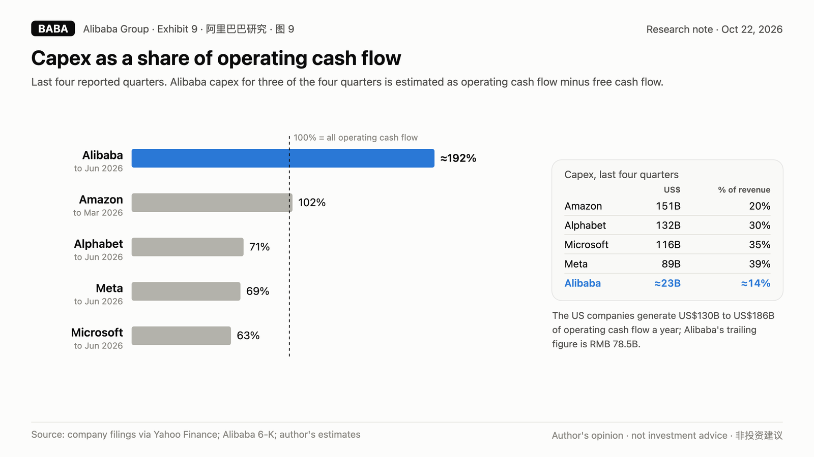
Every one of the US companies is spending far more than Alibaba in absolute terms, and several have recently pushed free cash flow to around zero or below. But they are doing it with operating cash flows of US$130 billion to US$186 billion a year, and their core businesses are growing. Alibaba is spending roughly one-fifth as much as Microsoft and about one-seventh as much as Amazon, and it already needs nearly twice its operating cash flow to do it.
The constraint is not ambition. It is the size of the cash engine. In a race where scale of compute matters, the company that can only afford a fraction of the leaders' budgets, and has to sell stock to afford that, is not positioned to win on infrastructure. It is positioned to be a well-run number two in a market that ByteDance is pricing for share.
8. From $11.9 billion of buybacks to $10 billion of new shares#
For three years, Alibaba's most persuasive answer to skeptics was capital return. The company bought back stock aggressively, raised the dividend, and paid special dividends out of asset sales. That answer is gone.
| Fiscal year (to March) | Buybacks | Share count effect | Dividend per ADS paid the following June |
|---|---|---|---|
| FY2025 | US$11.9 bn (1,197 mn ordinary shares) | net -5.1% after ESOP issuance | US$2.00 (US$1.05 regular + US$0.95 one-time, from disposals) |
| FY2026 | about US$1.0 bn (73 mn ordinary shares) | US$1.05 | |
| June 2026 quarter | US$162 mn (13.4 mn ordinary shares) | ||
| August 2026 | +710 mn new ordinary shares issued, about 3.7% dilution |
Sources: Alibaba March quarter 2025 and March quarter 2026 results announcements; June quarter 2026 results; placing announcements of August 23 and August 26, 2026 (Form 6-K 0001193125-26-361715 and 0001193125-26-365894). Dividend history: Yahoo Finance.
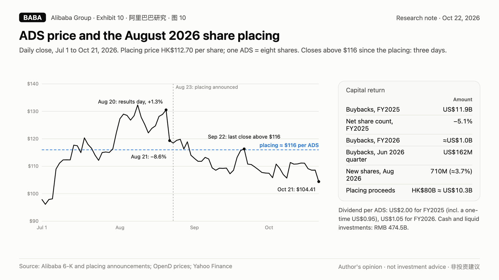
On August 23, 2026, Alibaba announced a proposed placing of new shares in Hong Kong. On August 26, it completed an HK$80 billion placing of 710,000,000 new ordinary shares at HK$112.70 each, about US$10.3 billion. Each ADS represents eight ordinary shares, so the placing price was about US$116 per ADS. The company said it would put roughly 60% of the proceeds into expanding global computing infrastructure and roughly 40% into hyperscale AI data centers and the upgrade of its traditional cloud infrastructure.
The sequence matters.
On August 20, Alibaba reported June-quarter results: CMR down 7%, adjusted EBITA down 30%, free cash flow of negative RMB 44.7 billion. The ADS closed up 1.3% that day. The next session it fell 8.6%. Two days later, on Sunday, August 23, the company announced the placing. Since the placing closed, the ADS has finished above US$116 on only three trading days, the last on September 22; on October 21 it closed at US$104.41.
A company with RMB 474.5 billion of cash and other liquid investments chose to issue equity rather than draw down that liquidity or borrow more. We think that tells you two things. First, management expects capex needs that internal cash generation cannot cover, even after the quick commerce war cools. Second, at roughly US$116 per ADS, management judged its own stock a currency to spend rather than an asset to buy. A year earlier the same company was retiring 5% of its shares annually.
When the people with the best information stop buying and start selling, we suggest believing the actions over the slides.
9. Four misses in a row, and the Street still wants +66%#
Alibaba has missed consensus non-GAAP EPS in each of the last four quarters.
| Quarter | Consensus EPS per ADS | Reported | Surprise | ADS move on results day |
|---|---|---|---|---|
| Sep 2025 | RMB 5.78 | RMB 4.36 | -25% | -2.3% |
| Dec 2025 | RMB 10.94 | RMB 7.09 | -35% | -7.1% |
| Mar 2026 | RMB 5.74 | RMB 0.62 | -89% | +8.2% |
| Jun 2026 | RMB 10.76 | RMB 8.52 | -21% | +1.3%, then -8.6% the next session |
Consensus: Yahoo Finance. Price moves: close before results to close on results day (Alibaba reports before the US open), from OpenD price data.
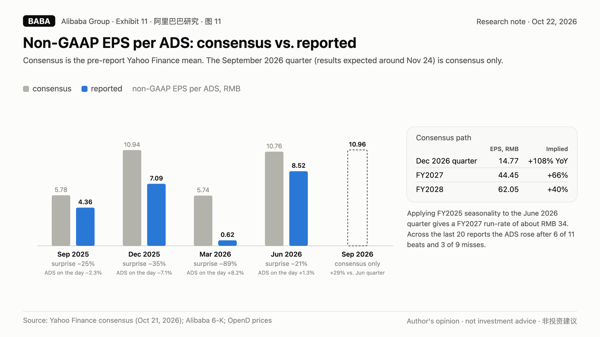
The stock does not reliably fall on misses. Across the last 20 reports, the ADS rose after 6 of 11 beats and 3 of 9 misses, and the median results-day move was 5.9%. The market has been trading the cloud story through the misses. That is precisely why the misses matter: they are accumulating in the estimates rather than in the price.
Look at what consensus now requires:
| Period | Consensus non-GAAP EPS per ADS | Implied change |
|---|---|---|
| September 2026 quarter | RMB 10.96 (18 analysts, range 8.59 to 14.19) | +29% vs. June quarter; +151% vs. a year ago |
| December 2026 quarter | RMB 14.77 | +108% vs. a year ago |
| FY2027 (to March 2027) | RMB 44.45 | +66% vs. FY2026's RMB 26.82 |
| FY2028 (to March 2028) | RMB 62.05 | +40% again |
Source: Yahoo Finance consensus, October 21, 2026.
Here is a simple seasonality check. In fiscal 2025, before the quick commerce war, the June quarter delivered 25% of full-year non-GAAP EPS (RMB 16.44 of RMB 65.41). Apply the same seasonality to June 2026's RMB 8.52 and you get a fiscal 2027 run-rate of about RMB 34, not RMB 44. Consensus is roughly 30% above the run-rate that Alibaba's own most recent quarter implies, after four quarters in which consensus was too high every time.
The next test is the September quarter, which Yahoo Finance currently dates to around November 24, 2026; Alibaba has not confirmed the date. Options expiring November 27 price a move of about plus or minus 10.5% through that date, including several weeks of ordinary volatility.
10. Not cheap: 33.9 times what Alibaba actually earns#
Bulls describe Alibaba as cheap. On trailing earnings it is not cheap at all.
| Measure | Value | Context |
|---|---|---|
| Trailing non-GAAP P/E | 33.9x | 96th percentile of its own five-year range (7.3x to 42.7x, median 12.0x) |
| P/E on FY2027 consensus (RMB 44.45) | 15.7x | requires 66% EPS growth |
| P/E on FY2027 run-rate (about RMB 34) | about 20.4x | seasonality-adjusted June quarter |
| P/E on FY2028 consensus (RMB 62.05) | 11.2x | requires another 40% growth |
| Tencent trailing non-IFRS P/E, for comparison | 11.2x | lowest in five years, with profits growing |
Computed from OpenD closing prices, Yahoo Finance EPS history and consensus, and USD/CNY of 6.678. P/E series use point-in-time trailing four-quarter non-GAAP EPS per ADS.
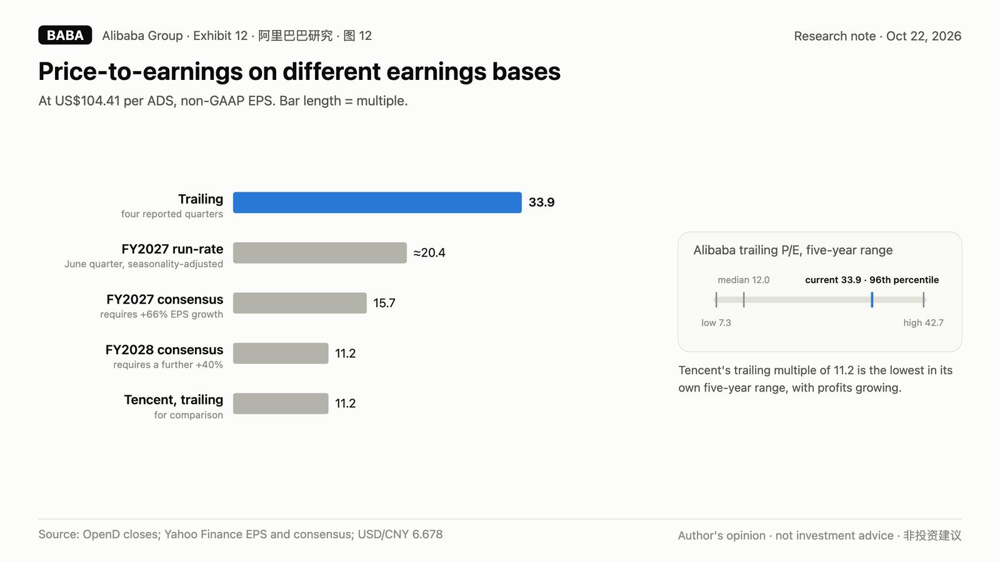
The "cheap" multiple only appears after you assume the recovery. On what Alibaba is actually earning, the stock is priced near the top of its five-year range. And for investors who want Chinese internet exposure with AI optionality at a low multiple, Tencent trades at the lowest trailing multiple in five years while still growing profits. Alibaba is not the value option in its own peer group.
10.1 Four scenarios, one expected value: $83#
We value Alibaba on fiscal 2028 non-GAAP EPS, one year out, under four scenarios. Multiples are anchored to Alibaba's own five-year trailing range (low 7.3x, median 12.0x, high 42.7x) and to where Tencent trades today.
Bear, 25% probability: two wars, no ceasefire. FY2028 EPS RMB 30, 9x, US$40 per ADS. Quick commerce stays a subsidy fight. CMR stays flat to down on a reported basis. AI Labs and Applications losses stay above RMB 50 billion a year as Alibaba chases Doubao. Depreciation from the 2026 buildout lands on cloud margins. EPS settles near today's run-rate. The market prices Alibaba near the low end of its range, as it did in 2022 to 2024.
Base, 40% probability: slow, expensive repair. FY2028 EPS RMB 42, 11x, US$69 per ADS. Quick commerce losses keep narrowing, the e-commerce group's EBITA recovers partway toward fiscal 2025 levels, and cloud keeps compounding. But AI Labs remains a large loss, depreciation absorbs much of cloud's operating leverage, and fiscal 2028 EPS lands about one-third below consensus. A below-median multiple reflects lower returns on a much larger capital base.
Street, 25% probability: consensus delivered. FY2028 EPS RMB 62, 12x, US$111 per ADS. Everything in the consensus path happens on schedule. The market pays Alibaba's five-year median multiple for it. The stock is roughly where it is today plus 7%.
Bull, 10% probability: the AI winner re-rating. FY2028 EPS RMB 72, 16x, US$172 per ADS. Earnings recover above fiscal 2025's RMB 65.41, cloud becomes the dominant profit center, Qwen closes the consumer gap, and the market re-rates Alibaba as China's AI infrastructure champion.
Exhibit 13. Scenario valuation and probability weighting
| Scenario | EPS (RMB) | P/E | Value (US$) | Return from US$104.41 | Probability | Weighted value |
|---|---|---|---|---|---|---|
| Bear | 30 | 9x | 40.4 | -61% | 25% | 10.1 |
| Base | 42 | 11x | 69.2 | -34% | 40% | 27.7 |
| Street | 62 | 12x | 111.4 | +7% | 25% | 27.9 |
| Bull | 72 | 16x | 172.5 | +65% | 10% | 17.3 |
| Expected value | -21% | 100% | US$82.9 |
Value per ADS = EPS x P/E / 6.678 (USD/CNY).
10.2 The math for a short, and the risk that comes with it#
- Target. Our 12-month base-case value is US$69 per ADS, 34% below the current price. Our probability-weighted value is US$83, 21% below.
- Probability. We put 65% probability on the shares being lower than US$104.41 in twelve months: the bear and base cases together.
- Expected value for a short. On our weights, the expected 12-month return on a short position is about +21% before costs. Costs include the US$1.05 annual dividend a short seller must pay, about 1.0% at today's price, plus borrow fees, which vary by broker; short interest is only about 1.5% of float, so borrow has been easy.
- Sensitivity. Move 10 points of probability from the bear and base cases into the street and bull cases, using weights of 15%, 35%, 30% and 20%, and the expected value is US$98, still 6% below the current price. Move it the other way, to 35%, 40%, 20% and 5%, and the expected value is US$73, 30% below.
- Floor. Alibaba's cash and other liquid investments of RMB 474.5 billion are worth about US$28.6 per ADS before debt. Our bear case of US$40 still assigns value to the operating businesses. This is not a "zero" thesis.
The expected value is positive for a short across a wide range of probability weights. The distribution is not symmetric, and anyone acting on this should take that seriously: the bull case is a 65% loss on a short position, and Alibaba's ADS has rallied 52% in ten trading days (March 2022), 43% (February 2025) and 33% in eleven sessions after China's September 2024 stimulus. A thesis can be right and the position can still be wrong for months.
10.3 The Street needs profit above pre-war levels within 18 months#
EPS scenarios are easy to write down. It is more useful to translate them back into the profit the businesses must produce. With about 2.49 billion ADS-equivalents outstanding after the August placing, each RMB 1 of non-GAAP EPS per ADS is roughly RMB 2.5 billion of non-GAAP net income.
Over the last two years, Alibaba's non-GAAP net income has run at between 0.74 and 0.90 times its adjusted EBITA: 0.90 in the four quarters to June 2025, when interest and investment income were large relative to a weaker tax line, and 0.74 in the four quarters to June 2026. Using that range:
| Scenario | FY28 EPS per ADS | Implied non-GAAP net income | Implied adjusted EBITA |
|---|---|---|---|
| Bear | RMB 30 | RMB 75 bn | RMB 83 to 101 bn |
| Base | RMB 42 | RMB 104 bn | RMB 116 to 141 bn |
| Street | RMB 62 | RMB 154 bn | RMB 171 to 208 bn |
| Bull | RMB 72 | RMB 179 bn | RMB 199 to 242 bn |
Implied EBITA = net income / 0.90 to net income / 0.74. ADS-equivalents of 2.4877 billion per Yahoo Finance.
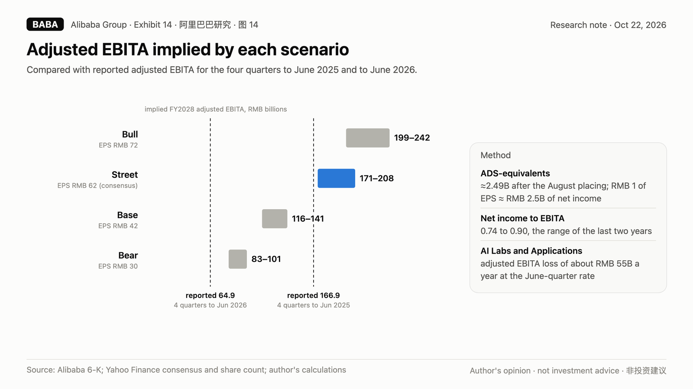
Now compare those to what Alibaba has actually earned. Adjusted EBITA was RMB 166.9 billion in the four quarters to June 2025, before the quick commerce war hit in full, and RMB 64.9 billion in the four quarters to June 2026.
The street case requires adjusted EBITA of roughly RMB 171 billion to RMB 208 billion in fiscal 2028. That is at or above the pre-war level, delivered while carrying an AI Labs and Applications segment that currently loses about RMB 55 billion a year at its June-quarter pace, and a depreciation base that the 2026 buildout is enlarging quarter by quarter. In other words, consensus does not merely assume that the quick commerce war ends. It assumes the war ends, the consumer AI losses largely disappear or are offset, and the new depreciation is absorbed, all within eighteen months.
Our base case requires roughly RMB 116 billion to RMB 141 billion of EBITA, about double the trailing figure and still well below the pre-war level. We think that is the more realistic shape of a repair: real, expensive and incomplete.
11. We have seen this movie: Baidu went "All in AI" and is down 52%#
11.1 Baidu's AI decade#
In 2017, Baidu told investors it was going "All in AI." It was early, it was right about the technology, and it spent heavily for years on autonomous driving, models and cloud. On the last trading day of 2016, Baidu's ADS closed at US$164.46. On October 21, 2026, it closed at US$78.82, down 52%, a period over which the Nasdaq-100 ETF QQQ rose about 557%. Baidu touched US$339.91 in February 2021 along the way, which tells you the market was willing to believe the AI story more than once.
Being early and right about AI did not make Baidu's shareholders money, because the profits from AI did not flow to the company that spent the most on it. They flowed to the companies that owned distribution and to the companies that sold the chips. We think Alibaba is now repeating Baidu's sequence with a larger checkbook and a weaker core than Baidu had in 2017.
11.2 Twelve years after its IPO: Alibaba +18%, QQQ +699%#
Alibaba's ADS closed its first trading day, September 19, 2014, at US$88.36. Twelve years later it trades at US$104.41, up 18%. QQQ is up about 699% over the same period. The ADS peaked at US$298.45 in October 2020 and is 65% below that level.
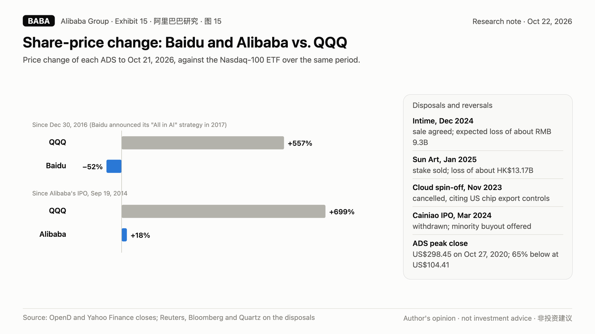
Along the way, Alibaba has repeatedly announced strategies, restructured around them, and then written them down or reversed them:
- Intime. Alibaba bought into department stores as a bet on integrating online and offline retail. In December 2024 it agreed to sell Intime and said it expected to record a loss of about RMB 9.3 billion.
- Sun Art. In January 2025 Alibaba agreed to sell its roughly 78.7% stake in hypermarket operator Sun Art for HK$12.29 billion, recording a loss of about HK$13.17 billion.
- The cloud spin-off. In November 2023 Alibaba cancelled the planned spin-off of its cloud unit, citing uncertainty from US chip export controls. The shares fell as much as 10% that day.
- Cainiao. In March 2024 Alibaba withdrew the Hong Kong IPO of its logistics arm and offered to buy out minority shareholders, in a deal reported at up to US$3.75 billion.
- Segments. In 2023 Alibaba reorganized into six business groups under its "1+6+N" structure, with separate listings envisioned for several of them. In the June 2026 quarter it reorganized again, into four segments: Alibaba E-commerce Group, AI Cloud and Compute Services, AI Labs and Applications, and All Others. Each re-segmentation resets the comparable history that investors use to judge whether the last strategy worked.
None of these decisions was irrational in isolation. Together they describe a company that has spent a decade buying, building and then exiting businesses at a loss, while its stock went nowhere. The quick commerce war and the consumer AI war are the newest entries on that list. We see no reason to give management the benefit of the doubt that the last decade did not earn.
11.3 A timeline#
| Date | Event |
|---|---|
| Sep 19, 2014 | NYSE IPO; first-day close US$88.36 per ADS |
| Oct 27, 2020 | ADS all-time closing high, US$298.45 |
| Apr 2021 | RMB 18.2 bn antitrust fine from China's market regulator |
| Jul 2022 | Named on the SEC's provisional list under the HFCAA |
| Mar 2023 | "1+6+N" reorganization into six business groups announced |
| Nov 2023 | Cloud spin-off cancelled, citing US chip export controls; ADS falls as much as 10% |
| Mar 2024 | Cainiao Hong Kong IPO withdrawn; minority buyout offered |
| Dec 2024 | Intime sale agreed, expected loss about RMB 9.3 bn |
| Jan 2025 | Sun Art stake sale agreed, loss about HK$13.17 bn |
| FY2025 (to Mar 2025) | US$11.9 bn of buybacks, net share count -5.1%; US$2.00 per ADS dividend including a one-time US$0.95 |
| 2025 | Quick commerce subsidy war; China E-commerce Group EBITA falls 44% for fiscal 2026 |
| FY2026 (to Mar 2026) | About US$1.0 bn of buybacks; dividend US$1.05 per ADS |
| Jun 2026 quarter | New four-segment structure; CMR -7%; AI Labs and Applications loses RMB 13.9 bn |
| Jul 20, 2026 | European Commission fines AliExpress EUR 550 mn under the DSA |
| Aug 20-21, 2026 | June-quarter results; ADS +1.3%, then -8.6% the next session |
| Aug 23-26, 2026 | HK$80 bn placing of 710 mn new shares at HK$112.70 |
| Oct 21, 2026 | ADS closes at US$104.41 |
| Around Nov 24, 2026 | September-quarter results (date per Yahoo Finance, not confirmed) |
12. Fines, a Cayman holding company and a board you don't control#
Fines are not hypothetical. In April 2021, China's market regulator fined Alibaba RMB 18.2 billion for abusing its dominant position. In July 2026, the European Commission fined AliExpress EUR 550 million under the Digital Services Act, the largest DSA fine so far, for failing to assess and mitigate the risk of illegal, unsafe and counterfeit products. Alibaba booked a provision for it in the June quarter. AliExpress was required to propose remedial measures by October 20, 2026; the Commission is expected to assess them in December and may impose further penalties if it is not satisfied. AliExpress called the fine "disproportionate."
The ADS is a claim on a Cayman holding company. Holders of BABA ADSs own shares in Alibaba Group Holding Limited, incorporated in the Cayman Islands. Key operating licenses in China sit in entities the group controls through contractual arrangements commonly called a variable interest entity structure. That structure has worked for two decades. It is also a structure whose enforceability ultimately depends on Chinese regulators, and investors should price it rather than ignore it.
Governance concentrates control. The Alibaba Partnership has the right to nominate a majority of the board of directors. That has not prevented good decisions. It does mean that minority shareholders, including every ADS holder, have limited ability to change strategy when the strategy is losing money.
Listing risk has receded but has not disappeared. In 2022, Alibaba was named on the SEC's provisional list under the Holding Foreign Companies Accountable Act before US-China audit access was resolved. Alibaba's dual primary listing in Hong Kong reduces the practical risk. The episode still shows how quickly the policy environment can change for this name in particular.
13. Eight questions management should answer#
If we were on the September-quarter call, we would ask these:
- CMR fell 7% on a reported basis. How much contra revenue did the new business development program create in the June quarter, how long will the program run, and what does CMR look like when it ends?
- Like-for-like CMR growth was 10% a year ago, 1% in December, 8% in March and 1% in June. What does "weaker transaction activities" mean for the Taobao and Tmall take rate over the next year?
- AI Cloud and Compute earned RMB 5.6 billion of EBITA and AI Labs and Applications lost RMB 13.9 billion. Is there a target date at which Alibaba's AI businesses, taken together, are EBITA-positive?
- What is the depreciation schedule for the RMB 67.7 billion of June-quarter capex, and what incremental depreciation should investors expect in fiscal 2027 and 2028?
- You hold RMB 474.5 billion of cash and other liquid investments. Why issue HK$80 billion of new equity at about US$116 per ADS instead of drawing on that liquidity?
- Will buybacks resume, and at what price would the board consider the stock cheap enough to buy rather than to sell?
- Doubao has 2.3 times Qwen's monthly users. What share of the consumer AI market does Alibaba need to justify the AI Labs losses, and by when?
- How much of Alibaba Cloud's AI revenue comes from customers running open-weight models such as DeepSeek V4, and what does that do to pricing power?
The answers to those questions, more than the headline revenue growth, will decide whether consensus is right.
14. What happens next: results around November 24#
- September 2026 quarter results, expected around November 24, 2026 per Yahoo Finance and not yet confirmed by Alibaba. Consensus needs EPS of RMB 10.96 per ADS, 29% above the June quarter, on revenue of RMB 269.9 billion. Options price about plus or minus 10.5% through November 27.
- Tencent's September-quarter results, dated around November 18, 2026 per Yahoo Finance. A strong Tencent print, with AI funded by growing ads, sharpens the contrast with Alibaba.
- European Commission assessment of AliExpress's remedies, expected in December 2026, with the possibility of further penalties.
- DeepSeek's second funding round and planned 2027 listing. Every DeepSeek release resets the price of capability in China.
- ByteDance's 2026 capex and Doubao monetization. Reported subscription tiers launched in May 2026. If ByteDance starts monetizing its 382 million users, Alibaba's consumer AI losses look harder to recover.
- Capital allocation. Any further equity issuance, or a continued absence of buybacks, confirms the funding gap. A large buyback restart would be a genuine negative for this thesis.
15. The bull case, and why we don't buy it#
We have heard every version of the bull case. Here are the strongest ones, stated as fairly as we can, with our response.
"Alibaba Cloud alone is worth the market cap." The sum-of-the-parts argument values the cloud at a software-like multiple of sales, values e-commerce on its fiscal 2025 profits, and adds the cash. The average analyst price target of US$186.64 per ADS, from 40 analysts on Yahoo Finance, is in that spirit. We say the cloud's 12% EBITA margin is an infrastructure margin, not a software margin, earned on a capital base that is growing faster than its profit. And fiscal 2025's RMB 193.2 billion of China e-commerce EBITA is not a normal year to anchor on; fiscal 2026's was RMB 107.5 billion, and the marketplace revenue line beneath it is shrinking.
"Quick commerce losses have peaked and unit economics are improving." We agree that the worst quarter was probably September 2025, when China E-commerce Group EBITA fell 76%. We say a peak in losses is not a return of profits. The June 2026 e-commerce group earned 1% less than a year earlier on a restated base that was itself down sharply, and CMR fell 7%. Wars like this end when someone stops spending, and the profits that were spent do not come back.
"Alibaba is cheap against US peers." We say it is cheap only against estimates. On trailing earnings it trades at 33.9 times, the 96th percentile of its own five-year range. The forward multiple requires 66% growth in one year and 40% the next, from a company that has missed four quarters running. If you want China internet at a genuinely low multiple with growing profits, Tencent is at 11.2 times trailing earnings, its lowest in five years.
"There is no balance sheet risk; Alibaba has RMB 474.5 billion of liquidity." We agree. This is a valuation short, not a solvency short, and we say so plainly. But the company itself chose to issue HK$80 billion of equity rather than use that liquidity. Investors should ask why, and should expect further dilution if capex stays at the June-quarter pace.
"AI-related revenue growing at triple digits for twelve quarters proves monetization." We say growth from a small base is not the same as a return on capital. Alibaba's AI businesses lost RMB 8.2 billion of EBITA combined in the June quarter, and trailing capex was roughly three times annualized AI-related product revenue. The open-source price ceiling that DeepSeek sets makes that ratio harder, not easier, to improve.
"Qwen is world-class and open-source too." We agree on the quality. We say quality is not the bottleneck in consumer AI; distribution is. Doubao has 382 million monthly users to Qwen's 167 million, and it sits on top of Douyin. Open-source leadership wins developer mindshare. It does not, by itself, win the cash flows that pay for the next data center.
"A China stimulus rally will lift everything." We say that is the main risk to the position, not to the thesis. In the eleven sessions after China's September 2024 stimulus announcements, the ADS rose 33%. Anyone positioning against Alibaba should size for that possibility rather than argue with it.
16. Eight things that would prove us wrong#
We are disciplined about this. A short thesis that cannot be falsified is a bet, not research. These are the observable conditions under which we would abandon ours:
- CMR returns to reported growth above 5% for two consecutive quarters, without new contra-revenue programs. That would mean the marketplace is not losing share.
- The e-commerce group's adjusted EBITA returns above RMB 45 billion a quarter. That would mean the quick commerce profit drain is reversing faster than we think.
- AI Labs and Applications losses fall below RMB 8 billion a quarter while Qwen's user base grows. That would mean consumer AI is becoming a business rather than a cost.
- Free cash flow turns positive for two consecutive quarters without a capex cut. That would close the funding gap that the placing revealed.
- Buybacks restart at scale, say above US$2 billion in a quarter. That would show management thinks the stock is cheap.
- Alibaba beats September-quarter consensus EPS of RMB 10.96. That would be the first beat in five quarters and would weaken our case that estimates are too high.
- A broad China re-rating. A large stimulus program like September 2024's could lift the whole sector regardless of fundamentals. That would not make the thesis wrong, but it would make the position painful.
- Chip supply loosens materially, lowering the capex required per unit of AI revenue.
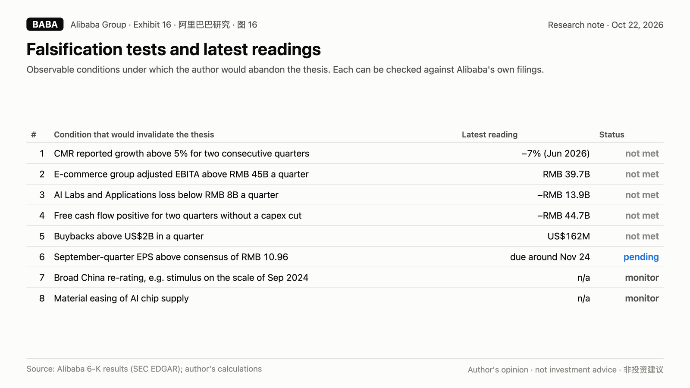
Alibaba Cloud's 45% growth, its 12% EBITA margin and its RMB 474.5 billion of liquidity are real strengths, and we do not dismiss them. Our argument is that they are not large enough to offset a shrinking core, a loss-making AI portfolio, an equity-funded capex program and estimates that have been wrong four quarters running.
17. Alibaba is not going to zero. It doesn't need to.#
The market has spent a year forgiving Alibaba's earnings misses because the cloud number keeps going up. We think that is the wrong number to stare at.
The number that funds Alibaba, customer management revenue, is shrinking. The number that measures the company's profitability, adjusted EBITA, has fallen 61% over the last four quarters. The number that measures self-sufficiency, free cash flow, is negative RMB 72.5 billion over the same period. The number that measures management's own conviction moved from US$11.9 billion of buybacks to HK$80 billion of new shares. And the number that measures expectations, consensus EPS, still assumes a recovery that the last four quarters did not deliver.
Alibaba is fighting a subsidy war in quick commerce and a capital war in AI at the same time, against a competitor in ByteDance that is reportedly earning about six times as much and a competitor in Tencent that is earning about six times as much and funding AI out of a growing ad business. It is doing this while a well-funded open-source rival sets the price of the product it is trying to sell.
We think the likeliest outcome is a slow, expensive repair: earnings recover partway, the capital base grows sharply, returns on that capital stay low, and the market prices Alibaba below its historical median multiple. That is our base case of US$69 per ADS. Weighting all four scenarios gives an expected value of about US$83, 21% below today's price.
Alibaba is not going to zero. It does not need to for the shares to be overvalued.
Disclaimer#
This report expresses the author's opinions. It is based on public information, including Alibaba Group's filings with the US Securities and Exchange Commission, its results announcements and placing announcements, Tencent's results announcements, and named third-party reports, which the author believes to be reliable but has not independently audited. Figures about ByteDance and DeepSeek come from media reports citing people familiar with those private companies and have not been confirmed by them. Consensus estimates are from Yahoo Finance. Market prices are from OpenD and Yahoo Finance as of October 21, 2026. Scenario probabilities and valuations are subjective judgments and are not predictions. The author is not affiliated with Citron Research or any other research firm. This is not investment advice, not an offer or solicitation to buy or sell any security, and should not be relied on as the basis for any investment decision. Short selling involves the risk of unlimited loss. Do your own research.
Sources#
- Alibaba Group, Form 6-K results announcements: quarter ended June 30, 2025 (0001104659-25-085638); September 30, 2025 (0001104659-25-115949); December 31, 2025 (0001104659-26-032060); March 31, 2026 and fiscal 2026 (0001104659-26-060224); June 30, 2026 (0001104659-26-099220); March 31, 2025 and fiscal 2025 (0001104659-25-049400). SEC EDGAR.
- Alibaba Group, proposed placing and completion of HK$80 billion placing, August 23 and August 26, 2026 (0001193125-26-361715; 0001193125-26-365894). SEC EDGAR.
- Tencent Holdings, 2026 second quarter results, August 12, 2026, and prior quarterly results announcements. tencent.com.
- QuestMobile first-half 2026 AI-native app data, via TechNode, July 14, 2026.
- IDC China public cloud large-model token share, via media coverage, May 2026; Omdia AI cloud revenue share, as cited by Alibaba, via media coverage.
- IDC China AI accelerator shipments, first half 2026, via Benzinga, October 2026.
- The Information, ByteDance first-half 2026 results, September 15, 2026, via media coverage; Bloomberg on ByteDance capex (May 2026) and syndicated loan (September 2026), via media coverage.
- The Information, DeepSeek January to July 2026 revenue and losses, via The Standard; Bloomberg and Caixin on DeepSeek funding rounds.
- European Commission, "Commission fines AliExpress EUR 550 million for breaching the Digital Services Act," July 2026.
- Reuters, Bloomberg, Quartz and others on the Intime and Sun Art disposals, the cancelled cloud spin-off (November 2023) and the withdrawn Cainiao IPO (March 2024).
- Caixin, TechNode and The Bamboo Works on the 2025 SAMR summons of JD.com, Meituan and Ele.me and the August 2025 joint pledge.
- Yahoo Finance consensus estimates and dividend history; OpenD daily prices; author's calculations.
What would prove this wrong
- OpenCustomer management revenue grows more than 5% on a reported basis for two consecutive quarters
- OpenE-commerce group adjusted EBITA returns above RMB 45 billion a quarter
- OpenAI Labs and Applications losses fall below RMB 8 billion a quarter while Qwen users grow
- OpenFree cash flow turns positive for two consecutive quarters without a capex cut
- OpenBuybacks restart at scale, above US$2 billion in a quarter
- OpenSeptember-quarter non-GAAP EPS beats the RMB 10.96 per ADS consensus
- OpenA broad China re-rating, such as stimulus on the scale of September 2024
- OpenAI chip supply loosens materially, lowering the capex needed per unit of AI revenue
Disclosure
Notes on this site express the author's opinions. They are based on public information believed to be reliable but not independently audited. Nothing here is investment advice or an offer to buy or sell any security.
中文摘要
阿里巴巴：两场仗，一个钱包。核心客户管理收入 6 月季度同比 −7%（同口径 +1%）；过去四季经调整 EBITA −61%、非 GAAP 每股收益 −68%、自由现金流 −725 亿元；AI 云赚 56 亿、AI 实验室与应用亏 139 亿，AI 合计单季亏 82 亿；回购从 FY25 的 119 亿美元降到 FY26 约 10 亿美元，8 月反手增发 800 亿港元、约 116 美元/ADS，现价已跌破增发价；连续四季不及预期，一致预期仍要求 FY27 增长 66%。按 FY28 四情景估值：熊 40 美元（25%）、基准 69 美元（40%）、街账 111 美元（25%）、牛 172 美元（10%），概率加权 83 美元，较 104.41 美元低 21%；股价一年后更低的概率 65%。牛市情景对空头是 −65%，历史上 10 个交易日最大反弹 52%。观点不构成投资建议；发布前须填写持仓披露。